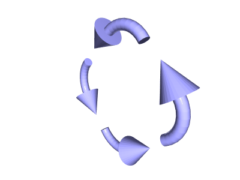
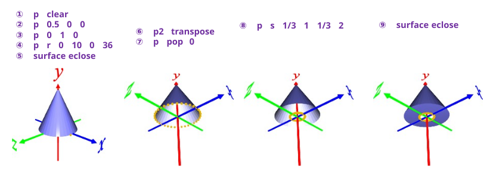
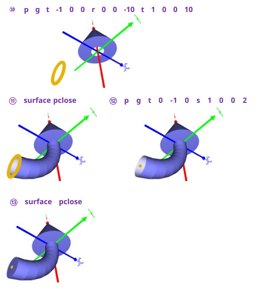

[1]矢じりをつくる
① p clear ･･･ Points[ ]を空にする
② p 0.5 0 0 ･･･ 矢の底辺になる点
③ p 0 1 0 ･･･ 矢の先になる点
④ p r 0 10 0 36 ･･･ 斜線を回転する
⑤ surface eclose ･･･ 面を張って矢じり(コーン)を作る
⑥ p2 transpose ･･･ path ⇔ extrusion。先端と底辺の円が path になる
⑦ p pop 0 ･･･ 底辺の円を Poinst[ ] にコピー
⑧ p s 1/3 1 1/3 2 ･･･ 底辺の円と 1/3 にリサイズした円を作る
⑨ surface pclose ･･･ 面を張る。transpose したので eclose ではなく pclose

[2]曲がった柄をつくる
⑩ p g t -1 0 0 r 0 0 -10 t 1 0 0 10 ･･･ (1,0,0)移動して 1/4 円、回転して元に戻す
⑪ surface pclose ･･･ 面を張る
⑫ p g t 0 -1 0 s 1 0 0 2 ･･･ 柄の底を閉じるため半径0の円をつくる
⑬ surface pclose ･･･ 面を張る
